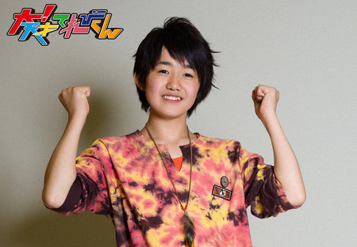

<< �O�̋L�� | �g�b�v�y�[�W | ���̋L�� >>
2014�N03��08�� (�y)�y���Ɓu��I�V�˂Ă�т���v�z��c�^��
�����Ɓu��I�V�˂Ă�т���v��
���̎��ْ̋��́A�����A�ꐶ�Y��Ȃ��Ǝv���܂��B
�Ȃ�Ă����Ă��A
�����e���r�̒��ɂ����Ă�ѐ�m���ڂ̑O�ɂ��邩��B
�ŏ��͂ǂ��Ȃ邩�Ǝv�������ǁA�����ɒ��ǂ��Ȃ�āA���ْ̋��͂Ƃ��܂����B
�݂�Ȗʔ����Ă������肵�Ă��āA������ꂽ��ʂ����X����܂����B
�l�́A����Ȃ݂�Ȃ���D���ł��I
����Ƃ́A����2�l�łӂ��������Ă����B
���ɂ́A�݂�Ȃɂ������鎖�����������ǁA����Ƃ������Ԃ͖{���Ɋy���������B
�j�C�i�����́A���������̈ӌ����āA�����ӌ����o���Ă��ꂽ�B
�j�C�i�����́A���o����̗l�ȑ��݂������B
�����́A������������������ł����肷��ƁA�����O�̖ʔ����Ŗ��邢�C�����ɂ��Ă��ꂽ�B
�����ɂ́A�{���ɏ�����ꂽ�B
����́A������ׂ�Ȗl�̘b�����Ȋ�ЂƂ����A�����Ă��Ă��ꂽ�B
���ꂪ����ƁA�������y�ȋC�����ł���ꂽ�B
�Y�r�[�́A�����q�҂ȏ������邯��ǁA�����ƂȂ�Ƃ������S�����B
�Y�r�[�́A�ǂ�Ȏ����l�̎���S�z���Ă���āA���k�ɂ̂��Ă��ꂽ�A���肪�Ƃ��B
�߂�����́A�����������Ƃ₩�ȏ��ƁA�ʔ����������˔����Ă��B
�ł��A�������A����ς�D���������B�����D�������Ă���Ă��肪�Ƃ��B
�������́A�D���ȕ����ꏏ�ŁA�����������b�������Ă��ꂽ�A
����Ȃ�����A���A���킢���Ďd�����Ȃ��B�������́A��݂����ȑ��݂������B
���Y�ނ́A�ǂ�Ȏ��ł������������ŁA�N�����撣�낤�Ƃ����C���������������B
�l�́A���Y�ނ����Ă�ƁA�_���ɂȂ肻���Ȏ��ł��A�������撣�낤�Ƃ����C�����ɂȂ����B���肪�Ƃ��B
�Ƃ�������́A�������É��g�Œn���̘b�Ő���オ�鎖�����������A
��ꂽ���ɁA�Ƃ�������ƁA����肵�Ă�Ɨ��������B�Ƃ�������Ƃ���ƁA�����������b�N�X�ł����B
�݂͂�����́A�ǂ�Ȏ��ł����Ă����B���̏Ί�����Ă�ƁA���₳���B
�l�������Ă鎞�́u���v��ŁB�v�Ƃ����āA��܂��Ă��ꂽ�B�����������������B
�䂤������́A�����̐��E�ς������Ă���B
�m�ÂȂǂ��Ă��鎞�A�䂤������́A�����l�ɃA�h�o�C�X�����ꂽ�B����������l�Ɏv����B���肪�Ƃ��B
���������́A�ŔN���Ȃ�����A�������������肵�Ă����B
�ʔ������������āA�����^�������������B���������́A�݂�Ȃ̖��݂����ȑ��݂ł����B
�A�b�L�[�́A�ǂ�ȑ��k������Ă���āA�ʔ������������āA�������a�܂��Ă��ꂽ�B
����ȃA�b�L�[�́A�Ă�ѐ�m�݂�Ȃ̂��ꂳ��̂悤�ȑ��݂ł��B
�{�X�́A�����A��̋�C��ς��Ă���܂����B
�݂�Ȃ���������ł���Ƃ��́A�ʔ����������Ă݂�Ȃ��킹�Ă����B
����ȃ{�X�́A�Ă�ѐ�m�݂�Ȃ̂�������̂悤�ȑ��݂ł��B
���̃����o�[�ł�ꂽ���́A��Ղ��Ǝv���܂��B
1�����܂������������A�݂�ȂƂ͉�Ȃ�������������Ȃ��B
�����v���ƁA���̊�Ղɏ��������N�̃����o�[�́A�K�����Ǝv���܂��B
�݂�ȂɎx�����đ���������1�N�́A�l�̈ꐶ�̕ł��B
2013�N


���e��:��c�^�� | ���e����:18��00��


 " title="�\�[�V�����u�b�N�}�[�N�ɂ���">
" title="�\�[�V�����u�b�N�}�[�N�ɂ���">
��NHK�T�C�g�𗣂�܂��B

{kind=link}
{kind=link}